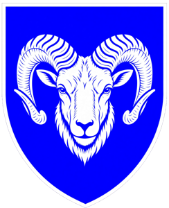

Деглянская Республика - ЧЕРНОВИК



Деглянская Республика (дегл. Deglänska Republyka, згур. Degljanska Republyka, сокращённо ДР, нефициально Деглия) — одно из двух фактически существующих непризнанных государств Бывшей Верхней Паннонии. ДР как политическая единица сформировалась в ходе верхнепаннонской гражданской войны в 1992-1993 годах и была официально провозглашена 1 октября 1994 года. Государство не поддерживает формальных дипломатических отношений ни с какими другими странами, фигурирует в международных документах как «Деглянская зона» и официально контактирует с внешним миром только через Наблюдательную миссию ООН по Бывшей Верхней Паннонии. Дипломатическому признанию препятствует отсутствие мирного соглашения со второй стороной конфликта — Згурской Республикой; хотя боевые действия между ними прекратились в 1995 году после подписания Лозаннских соглашений, спорные вопросы до сих пор не урегулированы, и позиции сторон по-прежнему несовместимы.
Исторический очерк
| 1999 | Coup in the Deglian Republic; permanent martial law by the Secret Control Committee, an anonymous military junta whose membership is not publicly disclosed; Martyn Bregovi possibly involved | Former Upper Pannonia, Sixth District of Vronovica, House of Bregovi | | 2002 | Deglian Secret Control Committee introduces the death penalty for corruption | Seventh District of Vronovica |
Государственное устройство и политика
Парламент
Президент
Премьер-министр и кабинет
Партии
Судебная власть
Региональное и местное управление
| № п/п | Территориальная единица | Население (2025) |
|---|---|---|
| 1 | Вроновица | 347670 |
| 2 | Гоубкаславский | 129706 |
| 3 | Кролово-Железенский | 93390 |
| 4 | Рудецкий | 49911 |
| 5 | Зоржинский | 34494 |
| 6 | Дрожинский | 29321 |
Роль Миссии ООН
Внешняя политика
Демография

Экономика
Права человека и гражданские права
Категории: Черновики, Постсоциалистическая эпоха, Страны